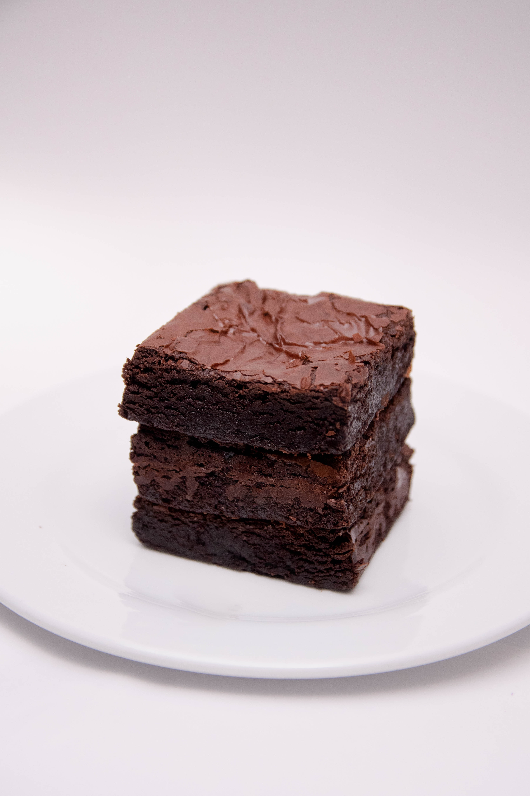

Recipes adapted from Hersheyland, accessed on Septemebr 8th 2021

float="left" width="50%">
Prep time: 20 minutes
Bake time: 37 minutes
Cool time: 1 hour 45 minutes
Yields: 24 Brownies
Ingredients
1 cup chocolate chips
3/4 cup cocoa powder
1/2 tsp baking soda
2/3 cub butter, melted and divided
1/2 cup boiling water
2 cups sugar
2 eggs
1 1/3 cups all-purpose flour
1 tsp vanilla extract
1/4 tsp salt
Additional cup chocolate chips for topping (optional)
Directions
13X9X2-Inch Baking Pan OR two 8-inch sqaure baking pans
Large mixing bowl
Oven
Measuring cups and spoons
Rubber spatula
Wire rack
Heat oven to 350F
Grease 13x9x2-inch baking pan or two 8-inch square baking pans
Stir together cocoa and baking soda in a large bowl; stir in 1/3 cup bytter.
Add boiling water;stir until mixture thickens.
Stir in sugar, eggs and ramaining 1/3 cup butter; stir until smooth.
Sift together flour, vanilla and salt; add to mixture; blend completly.
Stir in 1 cup chocolate chips.
Pour into the prepared pan.
Bake 35 to 40 minutes for a rectangular pan, 30 to 35 minutes for square pans or until brownies
begin to pull away frp, the sides of the pan and a wooden pick comes out cleamn. Do not
overbake.
Cool completly in a pan on a wire rack.
Frost with "One-Bowl Buttervream Frosting."
Cut into 24 squares.
One-Bowl Buttercream Frosting
Ingredients
6 Tbsps butter or margarine, softened
2 2/3 cups powdered sugar
1/2 HERSHEY'S Cocoa or HERSHEY'S SPECIAL DARK cocoa
1/3 cup milk
1 tsp vanilla extract
Directions
Large mixing bowl
Measuring cups and spoons
Rubber spatula
Beat butter in a medium bowl.
Add powdered sugar and cocoa alternatley with milk, beating to spreading consistency (additional
milk may be needed)